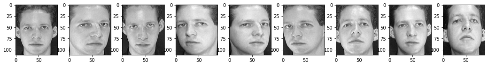
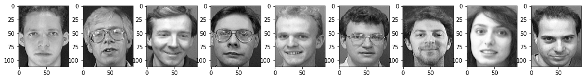
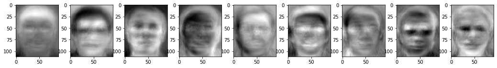
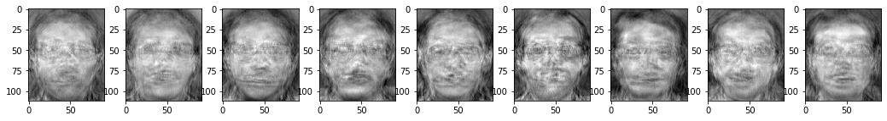
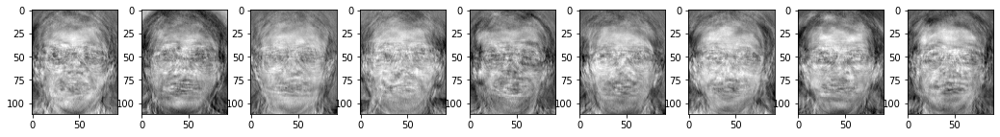
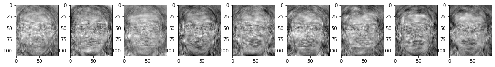
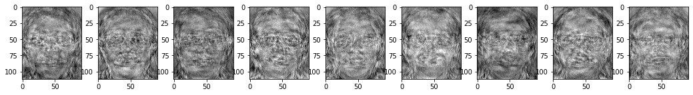
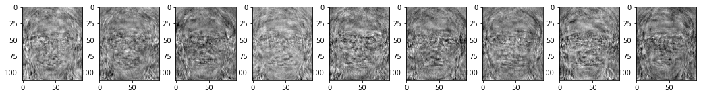

The ORL Database of Faces contains a set of face images taken between April 1992 and April 1994 at the lab. The database was used in the context of a face recognition project carried out in collaboration with the Speech, Vision and Robotics Group of the Cambridge University Engineering Department.
There are ten different images of each of 40 distinct subjects. For some subjects, the images were taken at different times, varying the lighting, facial expressions (open / closed eyes, smiling / not smiling) and facial details (glasses / no glasses). All the images were taken against a dark homogeneous background with the subjects in an upright, frontal position (with tolerance for some side movement).
The files are in PGM format, and can conveniently be viewed on UNIX (TM) systems using the ‘xv’ program. The size of each image is 92x112 pixels, with 256 grey levels per pixel. The images are organised in 40 directories (one for each subject), which have names of the form sX, where X indicates the subject number (between 1 and 40). In each of these directories, there are ten different images of that subject, which have names of the form Y.pgm, where Y is the image number for that subject (between 1 and 10).
The database can be retrieved from http://www.cl.cam.ac.uk/Research/DTG/attarchive:pub/data/att_faces.tar.Z as a 4.5Mbyte compressed tar file or from http://www.cl.cam.ac.uk/Research/DTG/attarchive:pub/data/att_faces.zip as a ZIP file of similar size.
The ORL database comes in such a hierarchy
att_faces
├─ README
├─ s1
│ ├─ 1.pgm
│ ...
│ └─ 10.pgm
├─ s2
│ ├─ 1.pgm
│ ...
│ └─ 10.pgm
...
└─ s40
├─ 1.pgm
...
└─ 10.pgm
A preview image of the Database of Faces is as follows
The Eigenface approach began with a search for a low-dimensional representation of face images. Sirovich and Kirby (1987) showed that principal component analysis could be used on a collection of face images to form a set of basis features. These basis images, known as eigenpictures, could be linearly combined to reconstruct images in the original training set.
A set of eigenfaces can be generated by performing PCA on a large set of images depicting defferent human faces. Informally, eigenfaces can be considered a set of “standardized face ingredients”, derived from statistical analysis of many pictures of faces. Any human face can be considered to be a combination of these standard faces.
Prepare a data set of face images. The images should have been resampled to a common pixel resolution $(H, W)$. Each image is treated as a vector $x^{(i)}$ by concatenating the rows of pixels, resulting in a single column with $H \times W$ elements. And all images of the data set are stored in a single matrix $X$
Perform PCA on the matrix $X$
Compute the mean $\mu$
Compute the convariance matrix $C$
Perform Eigen-Decomposition on matrix $C$
Sort the eigenvalues in desending order and arrange eigenvectors accordingly. Then choose a subset of the eigenvectors, i.e. principal components, as Eigenfaces.
These eigenfaces can be used to represent both existing and new faces. For instance, a new vector $x$ can be projected on the Eigenfaces
where
Elements in the vector $w$ are the scalar multipliers which can be used to characterize the new face.
Notice that the images are sized $(H \times W)$ pixels. The PCA solves the convariance matrix $C = XX^T$, which is a matrix of size $(H \times W) \times (H \times W)$. Performing ED on the matrix $C$ is not feasible, so some trick will be apply..
It’s possible to perform ED on matrix $X^TX$
So
which means $(\lambda_i, X u_i)$ is the eigenpair of matrix $X X^T$.
The Eigenfaces can be visualized when reshaped into the resolution $(H, W)$ .
Fisherfaces can be generated by performing LDA, which was invented by Sir R.A.Fisher. The idea of LDA is simple: same classes should cluster tightly together, while different classes are far away as possible from each other. This was recognized by Belhumeur, Hespanha and Kriegman and so they applied a Discriminant Analysis to face recognition.
Similarly, theimages of a data set are stored in a single matrix $X$
The scatter matrices $S_W$ and $S_B$ are calculated as:
where
$\mu$ is the center of all samples, $\mu_j$ is the center of class $j$;
Perform Eigen-Decomposition on matrix $S_W^{-1} S_B$
Sort the eigenvalues in desending order and arrange eigenvectors accordingly. Then choose a subset of the eigenvectors as Fisherfaces.
However, when performing ED on matrix $S_W^{-1} S_B$ using numpy.linalg.eig(), complex numbers are contained in eigenvalues and eigenvectors. So there are some tricks.
$S_W$ is a real symmetric matrix, which can be performed ED using numpy.linalg.eigh():
So
Substituting $S_W^{-1} S_B$ into the equation $S_W^{-1} S_B v_i = \lambda_i v_i$ gives:
which means $(\lambda_i, \Lambda^{\frac{1}{2}} U^T v_i)$ is the eigenpair of matrix $\Lambda^{-\frac{1}{2}} U^T S_B U \Lambda^{-\frac{1}{2}}$
Notice that $\Lambda^{-\frac{1}{2}} U^T S_B U \Lambda^{-\frac{1}{2}}$ is a real symmetric matrix, so it can be decomposed using numpy.linalg.eigh():
where
So
import os
import cv2
import numpy as np
from matplotlib import pyplot as plt
class PCA():
""" Principal Components Analysis
Attributes:
components_: {ndarray(n_components, n_features)}
means_: {ndarray(n_components)}
"""
def __init__(self, n_components):
self.n_components = n_components
self.components_ = None
self.means_ = None
def fit(self, X):
''' train the model
Params:
X: {ndarray(n_samples, n_features)}
'''
n_samples, n_features = X.shape
self.means_ = np.mean(X, axis=0)
X_ = X - self.means_
eigval, eigvec = None, None
if n_samples < n_features:
eigval, u = np.linalg.eig(X_.dot(X_.T))
eigvec = X_.T.dot(u).dot(np.diag(1 / eigval))
else:
covar_ = X_.T.dot(X_)
eigval, eigvec = np.linalg.eig(covar_)
order = np.argsort(eigval)[::-1]
eigval = eigval[order]
eigvec = eigvec.T[order].T
self.components_ = eigvec[:, :self.n_components].T
def transform(self, X):
"""
Params:
X: {ndarray(n_samples, n_features)}
Returns:
X_:{ndarray(n_samples, n_components)}
Notes:
X'_{nxk'} · V_{kxk'}^T = X''_{nxk}
"""
X_ = X - self.means_
X_ = X_.dot(self.components_.T)
return X_
def fit_transform(self, X):
self.fit(X)
return self.transform(X)
def transform_inv(self, X):
"""
Params:
X: {ndarray(n_samples, n_components)}
Returns:
X_:{ndarray(n_samples, n_features)}
"""
X_ = X.dot(self.components_) + self.means_
return X_
class LDA(object):
"""
Attributes:
n_components: {int}
components_: {ndarray(n_components, n_features)}
"""
def __init__(self, n_components=-1):
self.n_components = n_components
self.components_ = None
def fit(self, X, y):
""" train the model
Params:
X: {ndarray(n_samples, n_features)}
y: {ndarray(n_samples)}
"""
labels = list(set(list(y)))
n_class = len(labels)
n_samples, n_feats = X.shape
S_W = np.zeros(shape=(n_feats, n_feats))
S_B = np.zeros(shape=(n_feats, n_feats))
mean_ = np.mean(X, axis=0)
for i_class in range(n_class):
X_ = X[y==labels[i_class]]
means_ = np.mean(X_, axis=0)
X_ = X_ - means_
means_ = (means_ - mean_).reshape(1, -1)
S_W += (X_.T).dot(X_) * (1 / n_samples)
S_B += (means_.T).dot(means_) * (X_.shape[0] / n_samples)
s, u = np.linalg.eigh(S_W)
s_sqrt = np.diag(np.sqrt(s))
s_sqrt_inv = np.linalg.inv(s_sqrt)
A = s_sqrt_inv.dot(u.T).dot(S_B).dot(u).dot(s_sqrt_inv)
eigval, P = np.linalg.eigh(A)
eigvec = u.dot(s_sqrt_inv).dot(P)
order = np.argsort(eigval)[::-1]
eigval = eigval[order]
eigvec = eigvec[:, order]
self.components_ = eigvec[:, :self.n_components].T
def transform(self, X):
"""
Params:
X: {ndarray(n_samples, n_features)}
Returns:
X: {ndarray(n_samples, n_components)}
"""
X_ = X.dot(self.components_.T)
return X_
def fit_transform(self, X, y):
"""
Params:
X: {ndarray(n_samples, n_features)}
Returns:
X: {ndarray(n_samples, n_components)}
"""
self.fit(X, y)
X_ = self.transform(X)
return X_
def transform_inv(self, X):
"""
Params:
X: {ndarray(n_samples, n_components)}
Returns:
X: {ndarray(n_samples, n_features)}
"""
X_ = X.dot(self.components_)
return X_
def load_ORL(dsize=None):
""" Load ORL
Params:
dsize: {tuple(H, W)}
Returns:
images: {list[ndarray(H, W)]}
labels: {list[int]}
Notes:
Download from https://www.cl.cam.ac.uk/research/dtg/attarchive/facedatabase.html
"""
DIR = 'att_faces'
SUBJECTS = 40; IMAGES = 10
FILENAME = '{}/s{}/{}.pgm'
images = []; labels = []
for i in range(SUBJECTS):
for j in range(IMAGES):
filename = FILENAME.format(DIR, i + 1, j + 1)
image = cv2.imread(filename, cv2.IMREAD_GRAYSCALE)
if dsize is not None:
image = cv2.resize(image, dsize[::-1])
images += [image]
labels += [i + 1]
return images, labels
def load(dsize=None):
""" Concatenate images to vectors
Params:
dsize: {tuple(H, W)}
Returns:
X: {ndarray(n_samples, n_features)}
y: {ndarray(n_samples)}
"""
images, labels = load_ORL(dsize=dsize)
X = np.concatenate(list(map(lambda x: x.reshape(-1)[np.newaxis], images)), axis=0) / 255.
y = np.array(labels)
return X, y
def show_features(X, dsize, title="features"):
""" Show features
Params:
X: {ndarray(N, n_features)}
dsize: {tuple(H, W)}
title: {str}
"""
SUBPLOT = "19{}"
plt.figure(figsize=(18, 2))
plt.title(title)
for i in range(9):
plt.subplot(int(SUBPLOT.format(i+1)))
plt.imshow(X[i].reshape(dsize), cmap="gray")
plt.show()
DSIZE = (112, 92)
X, y = load(DSIZE)
n_samples, n_features = X.shape
n_classes = len(set(y))
First 9 faces of subject 1 in the database are as follows.
show_features(X[: 10], DSIZE, title="origin {}".format(repr(DSIZE)))

Faces of first 9 subjects are as follows.
show_features(X[::10], DSIZE, title="origin {}".format(repr(DSIZE)))

The first 9 components are as follows.
pca = PCA(n_components=n_features)
pca.fit(X)
show_features(pca.components_, DSIZE, title="Eigenface {}".format(repr(DSIZE)))

In order to reduce the number of dimensions, we perform PCA on the origin data. Chooing different numbers of dimensions will result in differet outputs.
n_decomposed = n_samples - n_classes - 1
for n_decomposed in range(199 , n_samples - n_classes, 40):
pca = PCA(n_components=n_decomposed)
X_decomposed = pca.fit_transform(X)
lda = LDA(n_components=n_classes - 1)
lda.fit(X_decomposed, y)
components_ = pca.transform_inv(lda.components_)
show_features(components_, DSIZE, title="Fisherface {} {}".format(repr(DSIZE), n_decomposed))




